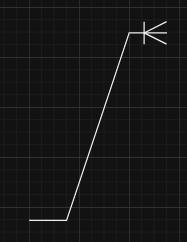
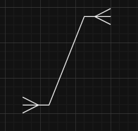

ERD-id on olulised tööriistad IT-süsteemi kavandamisel, pakkudes visuaalset esindust seoste kohta erinevate elementide vahel andmebaasis. Siin on kokkuvõte nende tähtsusest, loomisprotsessist ja põhikomponentidest:
ERD-id aitavad andmebaasi kavandamisel, aidates määratleda äriprotsesse ja toimides alusena relatsioonilistele andmebaasidele. Need pakuvad visuaalset viidet süsteemi nõuete mõistmiseks ning võivad olla väärtuslikud tõrkeotsinguks ja äriprotsesside taasplaneerimiseks pärast rakendamist. Siiski on ERD-id piiratud poolstruktureeritud või struktureerimata andmete esindamisega ja võivad olemasolevatesse süsteemidesse integreerimisel nõuda täiendavat tuge.
ERD-e saab kujutada kolmes peamises mudelis: kontseptuaalses, loogilises ja füüsilises. Komponendid hõlmavad entiteete (objekte või kontseptsioone), atribuute (entiteetide omadusi), suhteid, tegevusi (kuidas entiteedid jagavad teavet) ja ühendusjooni. Entiteedid on kujutatud ristkülikutena, atribuudid rombides ja suhted joontena või sümbolitena koos kardinaalsuse märkidega, mis näitavad suhte olemust (üks-ühele, üks-paljudele või paljudele-paljudele).
Kirjeldab suhete atribuute, näidates, kas need on valikulised või kohustuslikud. Kardinaalsused hõlmavad üks-ühele (1:1), üks-paljudele (1:M) ja paljudele-paljudele (M:N) suhteid.
üks ühele: üks mitmele:  mitu mitmele: Erinevad tööriistad, nagu arvutipõhine tarkvaraarendus (CASE) tööriistad, aitavad ERD-e joonistada. Mõned relatsioonilise andmebaasi haldussüsteemid (RDBMS) pakuvad sisseehitatud kavandamisvõimalusi.